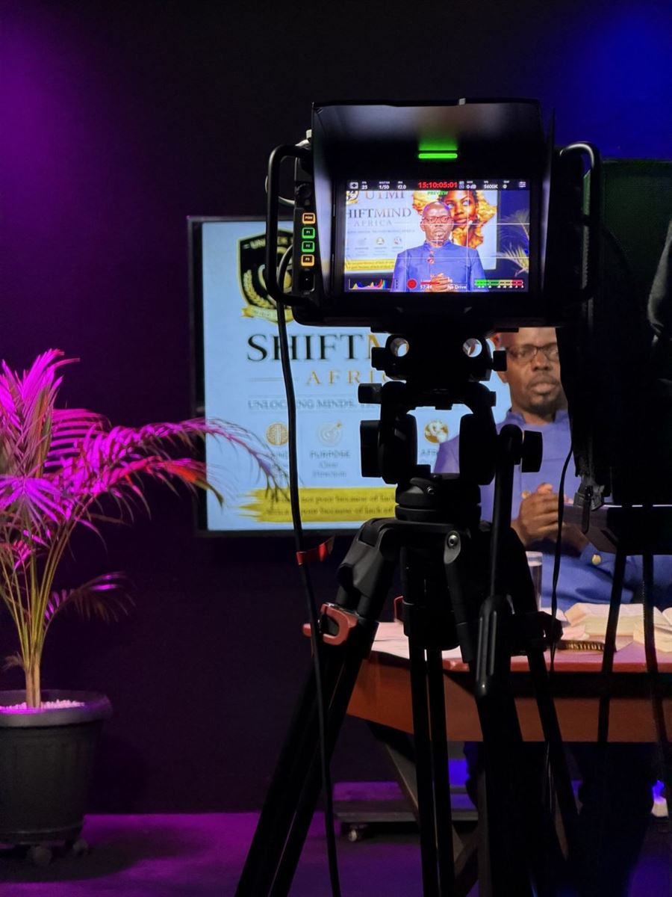
01
Livestreaming
For the people who couldn’t be in the room: relatives abroad, partners on the road, an audience bigger than the venue.
LIVEWe stream events to YouTube, Facebook & Zoom
Livestreams · Zoom · hybrid events
Your event, live on YouTube, Facebook and Zoom from three to six cameras, with clean sound and a full recording afterwards. The people who couldn’t be in the room still are.
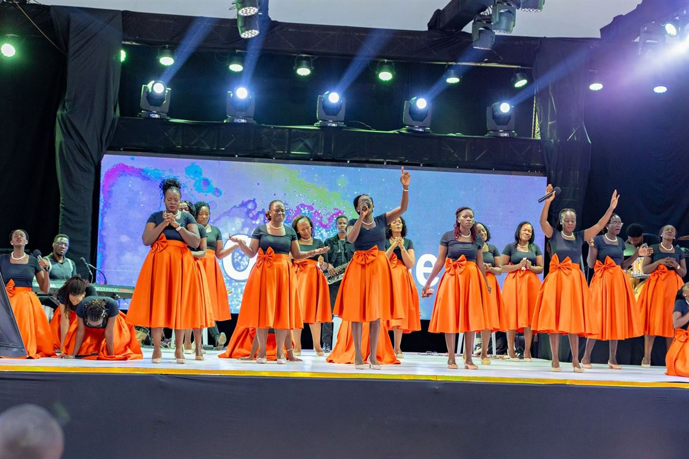
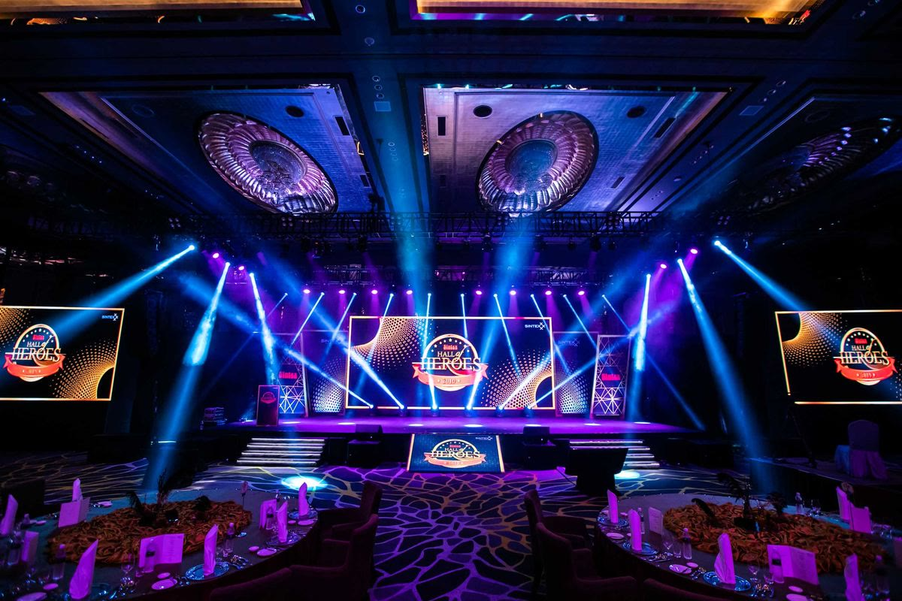
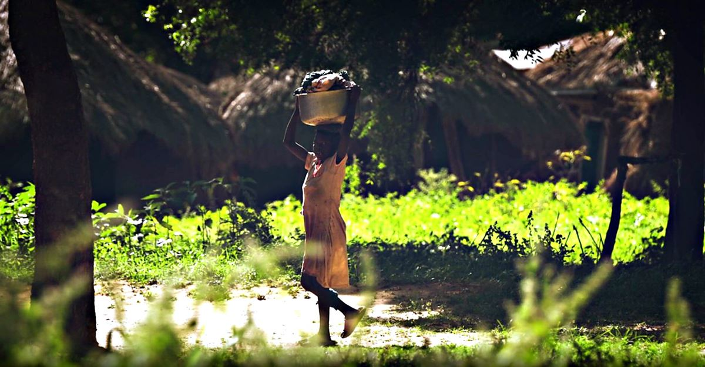
Streamed live by Sembule
Conferences, symposiums, awards nights and Zoom meetings we have taken live. Press any one to watch the stream.
From AGMs on Zoom to concerts on YouTube: if it happens in a room, we can put it online.
What we produce
Anyone can rent a camera or a speaker. What you’re hiring is a crew that has planned the room, done the sound check and stays calm when the programme changes.

For the people who couldn’t be in the room: relatives abroad, partners on the road, an audience bigger than the venue.

A conference is judged by its worst five minutes. Clear sound, readable screens and a calm crew.

When sound works, nobody notices. That is exactly the point.
People support what they can see. We film the work so it can speak for itself.
Also: Zoom & hybrid conferences · photography · videography · 65-inch TV hire
Showreel
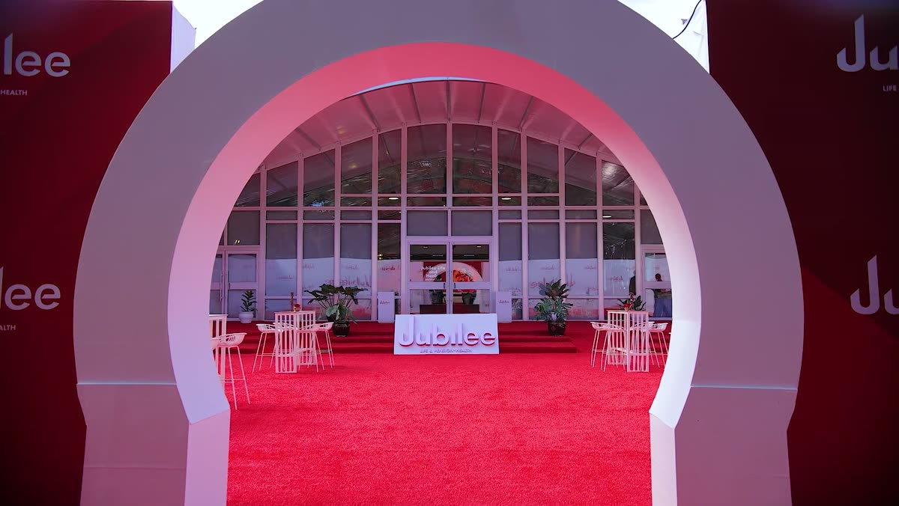
Selected work
Don’t take our word for it. Look at the rooms we’ve already worked in.
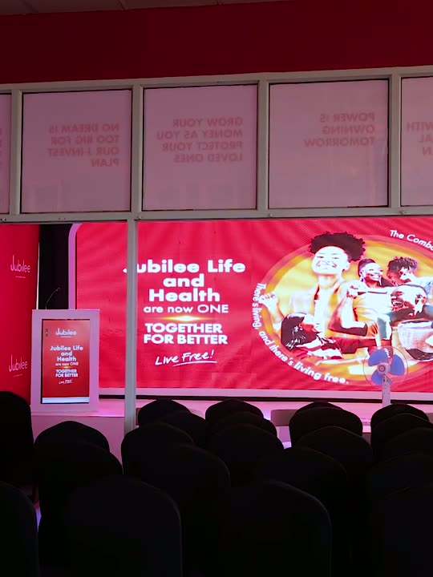
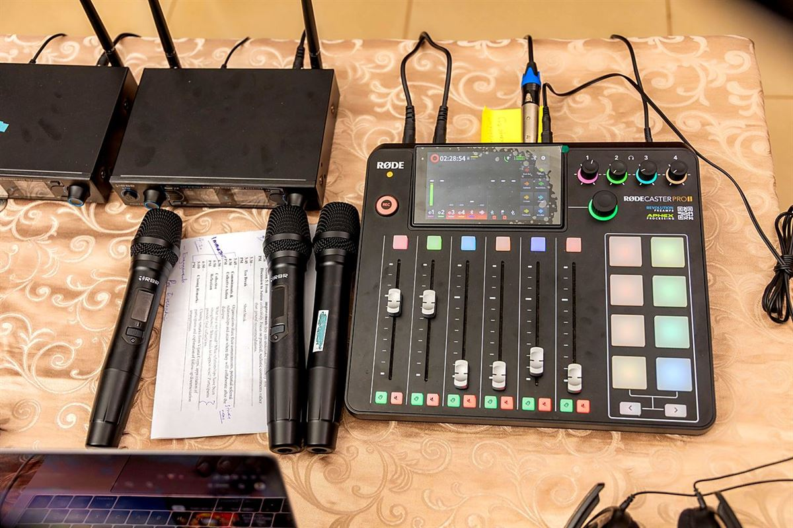
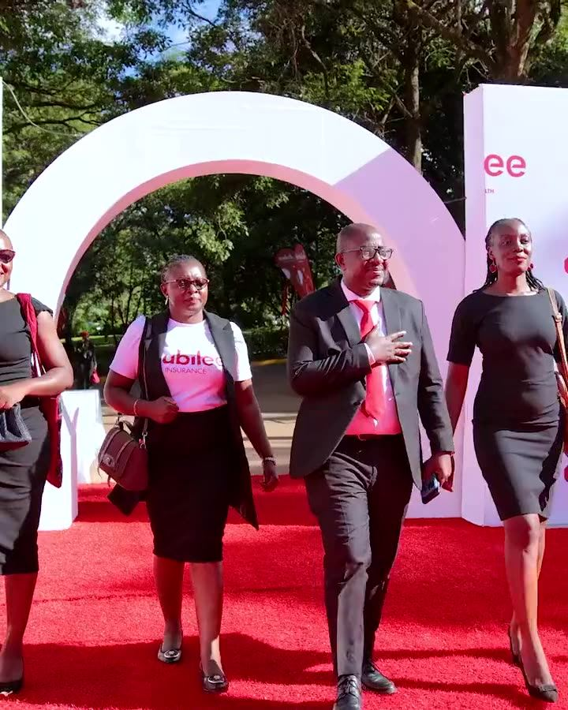
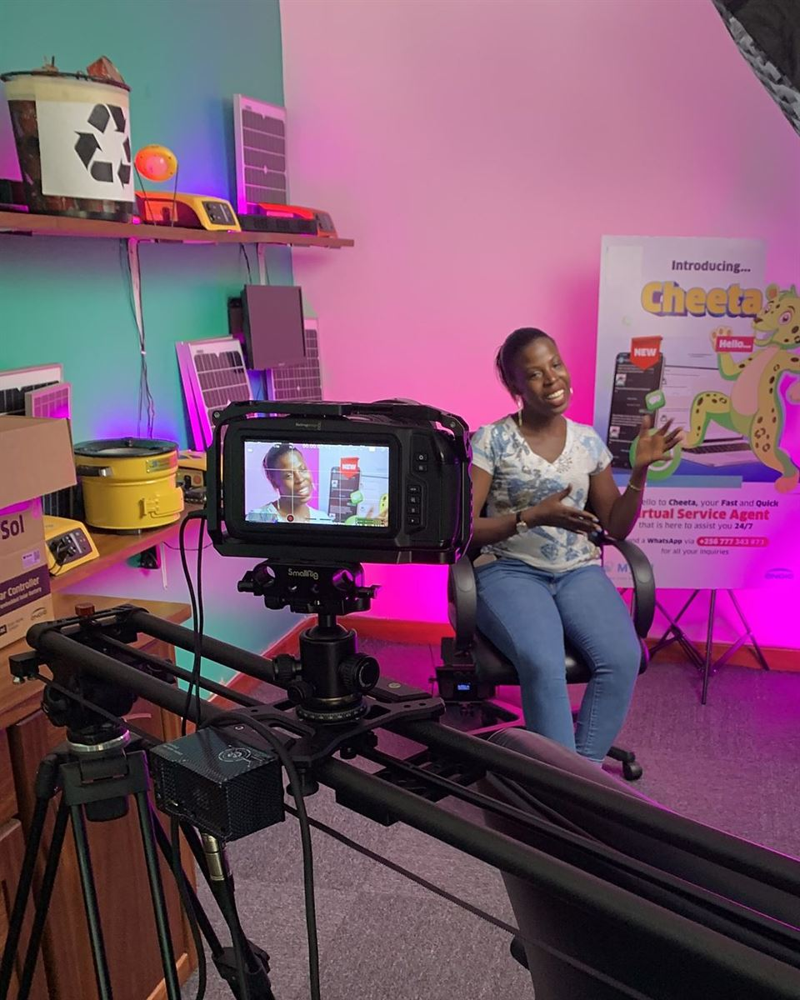

Sembule Media · Kampala, Uganda
Since 2022, Sembule Media has run cameras, streams, sound and screens for conferences, weddings and documentaries across Uganda. You look after your guests. We look after everything they see and hear.
Trusted by
Universities, ministries, banks and hotels have trusted us with days they couldn’t afford to get wrong.
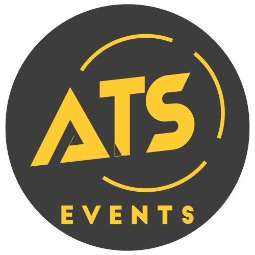
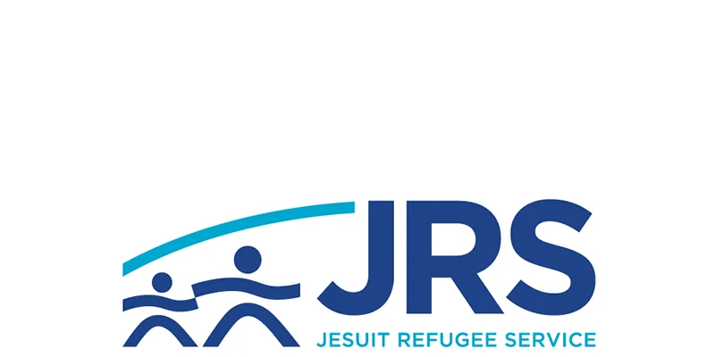
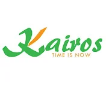
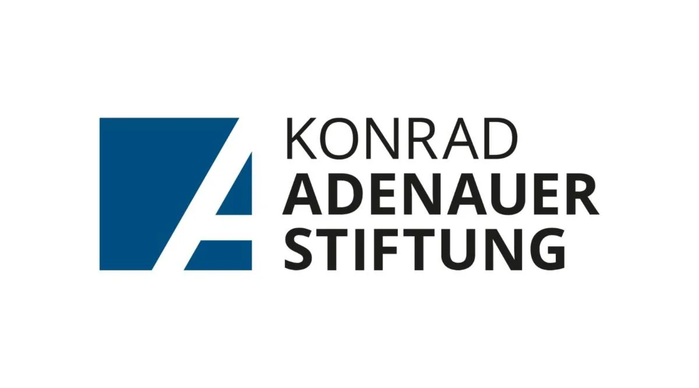
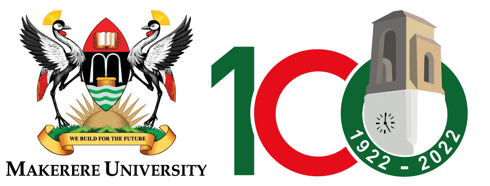
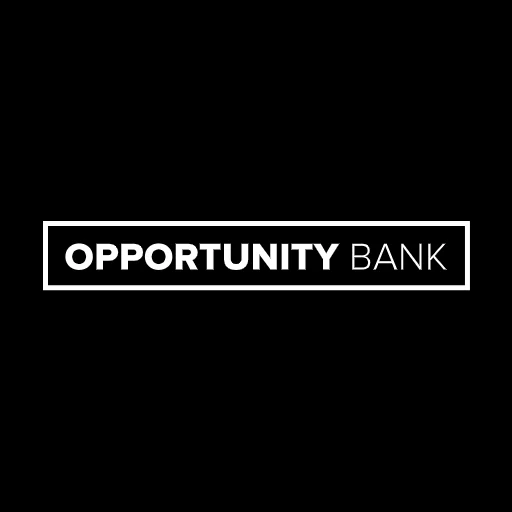
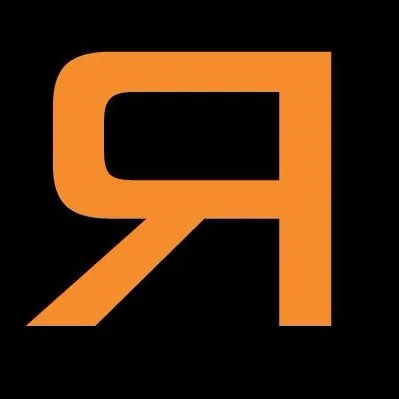
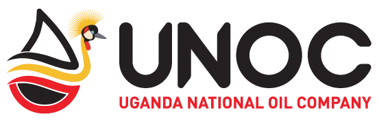
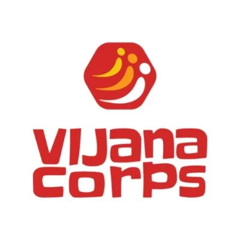
In their words
Corporate teams, couples, churches and NGOs on what it was like to hand Sembule Media the day.
01/ 03
Approved client words will appear here once they are published from the Sembule OS.
Client name to confirm
Corporate event
Bookings open
Send the date and the venue. We’ll tell you if we’re available and what the room will need. No full brief required.